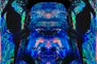
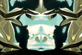
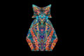
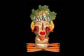

The Open Gallery
click thumbnail for full size image "Graphic Designer/Photographer. For my original abstract slides I use color gels and colored foil reflecting it into silver or gold mylar foil. Varying distances and crushed surfaces lend to a twisted and 3D pattern. After scanning the 35mm slides into Adobe Systems' Photoshop, I often mix two different slides together, while I blend with all the different modes in Photoshop and mask the unwanted areas out. The reverse of one layer meeting the original layer in the middle of the page creates symmetry. Surrealistic images take shape. I believe my art is created by nature for I can't predict the weird twist of light in my original slides. There are hidden pictures in all my work. Many will see different subject matter than I do or what the title suggests. I believe every blade of grass deserves close scrutiny to see all the beauty. Sunlight on my mylar foil show the complexity of nature and the final artwork derived from this light requires the same examination to detail."
M. M. Mulvihill



